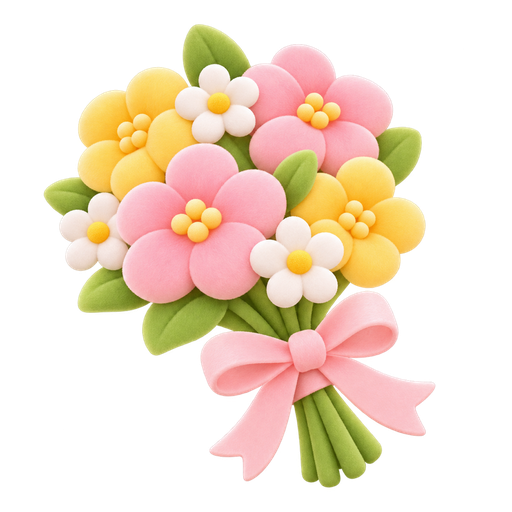

おしゃべりしよう
思い出と仲よし度は、そのまま残ります。
「さん」や「ちゃん」も、ここで付けられます。
声でお話しするときに、この読み方を使います。
もう一人の家族にも会えます。おしゃべり・思い出・仲よし度は、それぞれが持っています。日記帳・予定・お薬・連絡先は、2人で同じです。ふだんは、どちらか1人と毎日話すのがおすすめです。
日記は、このスマホの中にだけしまってあります。まとめるときだけ、お話の文をAIに送ります。
アプリを閉じていると、お知らせの音は鳴りません。そこで、こう使うのがおすすめです。
※お薬についての助言はしません。
友人や家族など、連絡を受け取ってくれる人です。
「助けて」の合図や、しばらくアプリを開いていないときに、連絡先の人のLINEに知らせます。相手の電話番号などを、ここに入れる必要はありません。

番号は30分だけ使えます。
吹き出しの 🔊 を押すと、いつでも聞けます。
アプリのように開けて、思い出も消えにくくなります。

ルール 2枚で熟語ができたら、そろいです。（例：花＋火＝花火）
四字熟語の勉強をしています。順番がバラバラだったり、字が入っていなかったり。直してあげてください。
字を1つ押してから、入れたい場所を押すと、入れかわります。下の字は、空いているマスに入れます。
スマホの中の、あなたの家族
💡 iPhoneの方へ：先にホーム画面に置いてから、ホーム画面のアイコンで始めるのがおすすめです。Safariで始めた思い出は、ホーム画面のほうには引っ越せません。
置き方：Safariの下の共有ボタン →「ホーム画面に追加」
このままでも、好きな名前でも大丈夫です